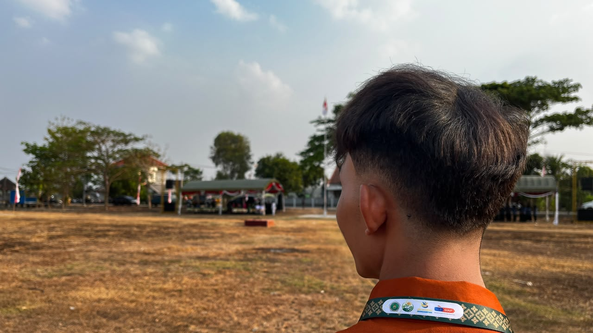
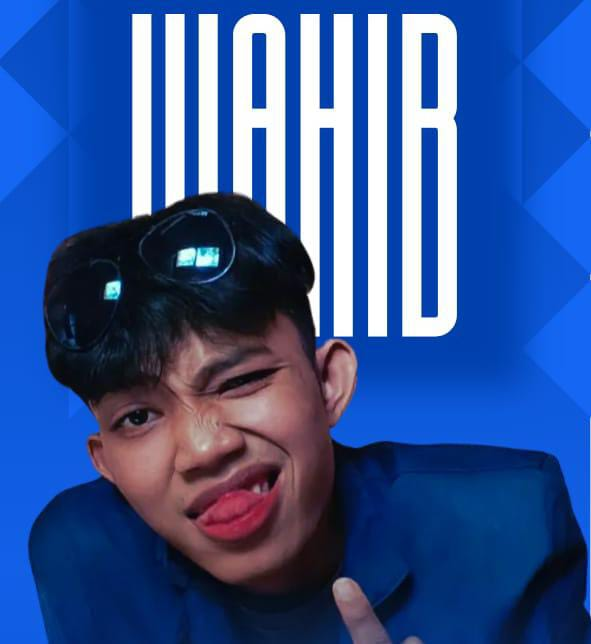
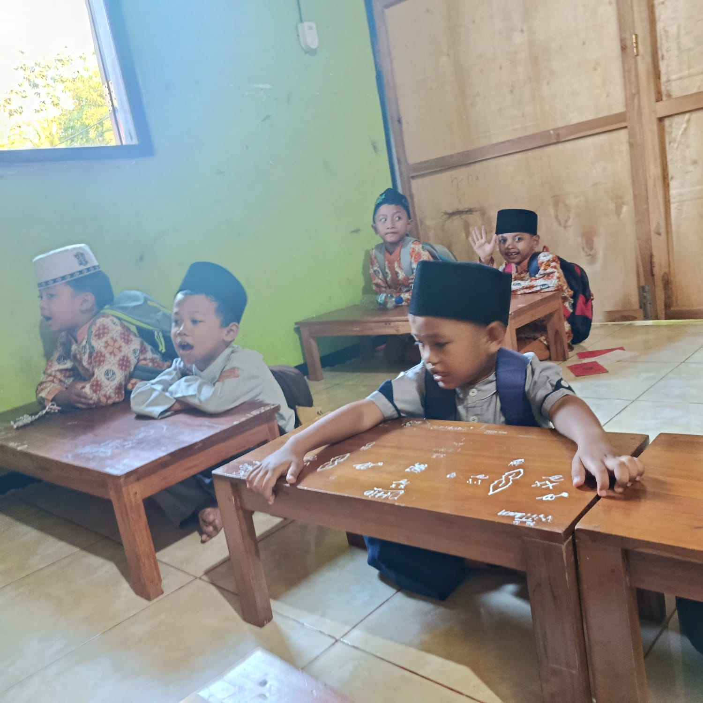
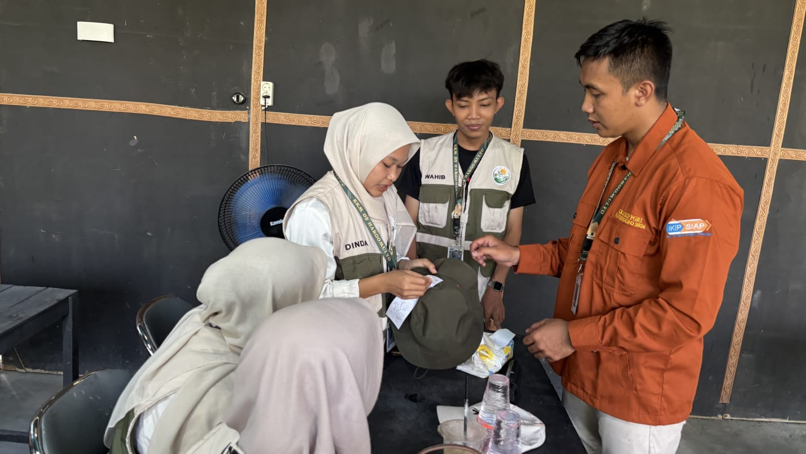
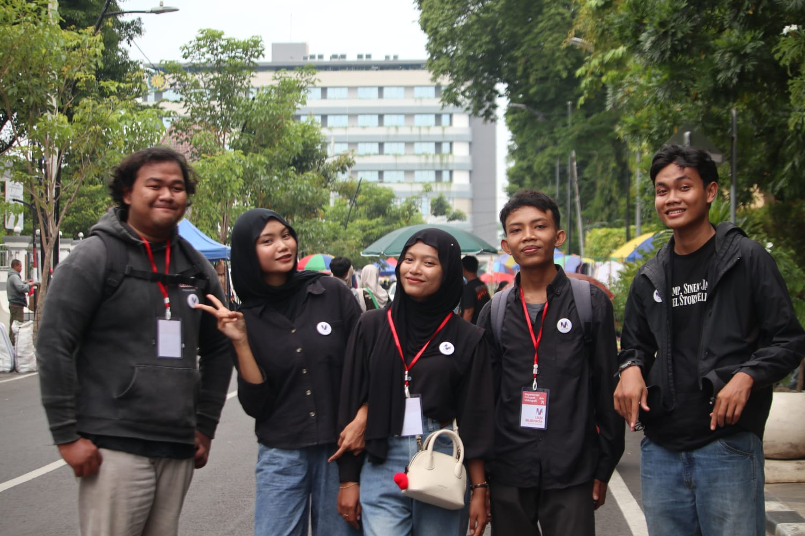

Wahib
Maulana.
Lulusan SMA yang tertarik pada desain, fotografi, editing, pelayanan, dan pengalaman digital.

Lulusan SMA Negeri 1 Padangan jurusan IPA yang memiliki pengalaman di pelayanan, usaha mandiri, desain, pengajaran, dan kegiatan kreatif.
↗
Lulusan SMA · Kreatif dan Adaptif
Pengalaman yang membentuk
kemampuan profesional saya.
Visual design · Creative service
Usaha mandiri · 2024
Teaching · Customer service
Hal-hal yang saya kerjakan,
nikmati, dan terus eksplorasi.
Mulai dari mengajar, memotret, membuat desain, sampai menikmati proses belajar hal baru.



Ringkasan pendidikan, pengalaman,
bahasa, dan aktivitas tambahan.
Baitul Muqoddas Sidorejo
Mengajar dan mendampingi kegiatan pembelajaran TPQ.Halo Paper
Mengelola jasa fotokopi, pelanggan, operasional, dan pelayanan.Rasa Kita
Menyiapkan minuman, melayani pelanggan, dan bekerja sama dalam tim.Jurusan IPA · Lulus 2024
Lulusan SMA yang terus mengembangkan keterampilan kreatif, teknis, dan komunikasi melalui pengalaman nyata.